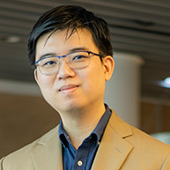

5 - 10 June 2022
“Conservation is a state of harmony between men and land.”Aldo Leopold
The Speakers
College of Integrative Studies,
Singapore Management University

Dr. Justin Tse
Assistant Professor of Humanities (Education), College of Integrative Studies,
Singapore Management University
Right People Renewable Energy
Singapore Institute of Architects
Innovate 360
College of Integrative Studies & School of Social Sciences,
Singapore Management University
Earth School Singapore
The Plastic Project
UglyFood
Finsbury Glover Hering
College of Integrative Studies,
Singapore Management University
College of Integrative Studies,
Singapore Management University
Zero Waste Singapore
Climate Conversations
Sustainability Project
Co-Founder, Coastal Natives, a Rumah Foundation project
TurtleTree